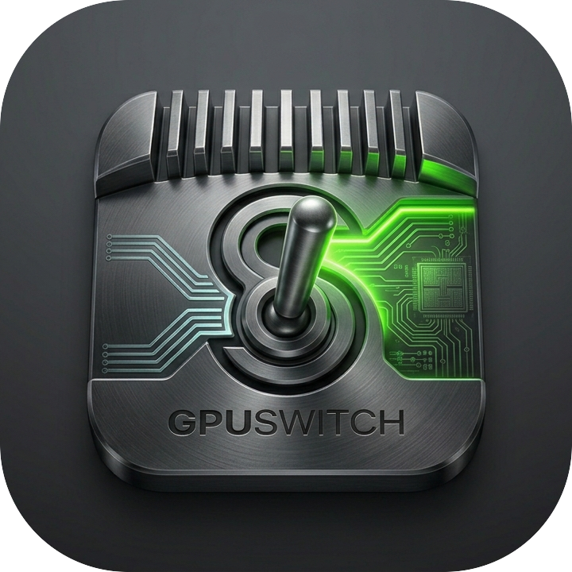

gpuswitch
Switch between integrated, discrete, and auto GPU on Intel Macs. Interactive TUI and scriptable CLI — no daemons, no config.
npm install -g @kud/gpuswitch-cli
Features
Everything gSwitch did — minus the abandoned app, plus a terminal you already have open.
Force the Intel iGPU for maximum battery life. Ideal for meetings, writing, and long unplugged sessions.
Activate the dedicated dGPU for full graphics performance when you need it — rendering, gaming, or external displays.
Restore macOS default behaviour, letting the system switch GPUs dynamically based on workload demand.
Arrow-key picker built with Ink and React. Shows your current mode at a glance — pick and confirm with enter.
Scriptable integrated|discrete|auto|status commands for shell
scripts, Raycast, or CI automation.
Thin wrapper around pmset. No daemons, no background
processes, no setup file. Works out of the box.
Quick Start
Install once, then use either the interactive TUI or headless subcommands — switching GPU modes requires sudo.
# 1. Install globally
$ npm install -g @kud/gpuswitch-cli
# 2. Open the interactive TUI (arrow keys + enter)
$ gpuswitch
GPU Mode
current: auto
❯ integrated integrated GPU only — best battery life
discrete discrete GPU only — full performance
auto let macOS decide automatically
↑↓ navigate · enter apply · q quit
# 3. Or go straight to a mode (prompts for sudo)
$ gpuswitch integrated
GPU mode set to: integrated
# Check what's active
$ gpuswitch status
current GPU mode: integratedCLI Reference
Run without arguments for the interactive TUI, or pass a subcommand for headless use in scripts and automation.